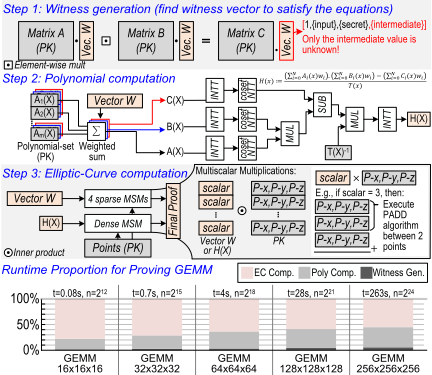
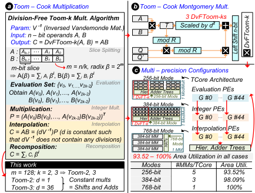
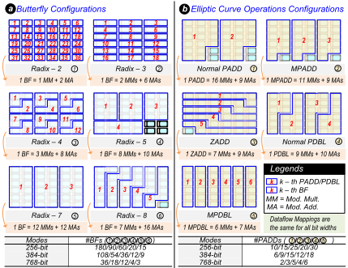

PREBA: A Hardware/Software Co-Design for Multi-Instance GPU Based AI Inference Servers
ZK-Flex：一种用于加速零知识证明（ZKP）的灵活且可扩展框架
简介
说明：任务标注标题为 PREBA，但正文实际论文为 ZK-Flex，本评估完全基于正文。论文针对零知识证明（ZKP）证明生成计算密集的问题：POLY 与 EC 运算约占 95% 证明时间，而现有可重构加速器在大位宽精度扩展、算法灵活性与资源效率上受限。方法上采用软硬协同：软件层以 NSC 填充替代 NP2 并配合混合基数 NTT 减少 MSM 点数，用解析估计器自适应选择 NTT/MSM 配置；硬件层设计基于 Toom-Cook 的多精度核 TCore（支持 256/384/768-bit）、ruche NoC 与链表式内存管理，在有限片上内存下提升 MSM 并行度。28nm 综合结果显示 36 TCore 配置面积 205.512 mm²、功耗最高 48.520 W @1GHz；对比 LegoZK 端到端平均加速 5.52×（最高 11.5×），面积效率平均提升 1.85×（最高 3.8×）。该工作属于密码学加速器体系结构研究，与本团队内存/互连 IP 设计与验证业务无直接关联。
问题
ZKP（以 Groth16 为代表）的证明生成高度计算密集，POLY 与 EC 运算合计约占 95% 总时间；硬件加速面临两大挑战：(1) 高效支持多样化大位宽模乘——Groth16 使用不能分解为互素小模数的大素数（无法利用 RNS 并行），且不同阶段模数位宽不同（如 BLS12-381 的 EC 基域 381-bit 与 POLY 标量域 255-bit）；(2) NTT 与 MSM 等大精度 kernel 顺序执行，负载规模变化会使瓶颈在 POLY 与 EC 阶段间转移，固定引擎分工导致利用率低下。现有可重构加速器中 ReZK 精度仅支持到 384-bit，LegoZK 面积效率欠佳，且两者均采用固定算法映射、缺乏软件层优化。
方法
软硬协同框架。软件层：WG 调度器逐层并行执行 R1CS 门；POLY 优化器提出 Next Smooth Composite（NSC）填充策略（用素因子 {2,3,5,7} 构成的 smooth composite 替代 2 的幂填充），配合支持 radix-2/3/4/5/7/8 的混合基数 NTT 减少 MSM 点数，并用 NTT/MSM 解析估计器在 NP2 与 NSC 间选择端到端最优策略；EC 优化器基于 Pippenger bucket MSM，自适应选择窗口大小与 tiling，并允许多个 MPADD 引擎共享同一窗口与统一 bucket 内存。硬件层：TCore 由 evaluation/整数乘法/interpolation 三类 PE 组成，通过 PE-thread 与 PE-thread group 层级组合实现 256/384/768-bit Toom-Cook 模乘（768-bit 采用混合 Toom-2/Toom-3，仅需两级递归）；多个 TCore 经 ruche-based NoC 组合为 NTT butterfly（采用 constant-geometry 结构避免逐级 NoC 重配置）与 EC 点运算；边界内存节点提供共 34 MB SRAM；链表式内存管理（head memory、link memory、bucket assigner）实现共享窗口下无冲突的 bucket 更新。
关键结果
对比最优先前设计 LegoZK：端到端证明生成延迟平均加速 5.52×，最佳 11.5×；面积效率（proofs/s/mm²）平均提升 1.85×，最高 3.8×
radix-2 NTT 平均加速 1.48×（MNT4-753）与 1.84×（BLS12-381、BN128）；MSM 加速 4.16×（BN128）、2.69×（BLS12-381）、3.29×（MNT4-753）
28nm、1 GHz 综合（36 TCore + 28 内存节点）：芯片总面积 205.512 mm²，功耗最高 48.520 W；TCore 间 768-bit @1 GHz，8×8 全双工 ruche 网络二分带宽 4.608 TB/s；片上内存节点共 34 MB
混合 Toom-2/Toom-3 的 768-bit 方案面积开销低于 schoolbook、纯 Toom-2 与纯 Toom-3 设计
混合基数 NTT 在 composite 尺寸下吞吐平均下降约 50%（内存带宽瓶颈），更高带宽可缓解；链表机制使 scalar 内存需求约增加 2 倍（论文称相对 bucket 内存可忽略）
创新点
相对 ReZK、LegoZK 等先前可重构 ZKP 加速器：(1) 据作者称是首个应用于 ZKP 硬件加速的层次化 Toom-Cook 架构，以混合 Toom-2/Toom-3 覆盖 768-bit；(2) NTT butterfly 与 EC 点运算由 TCore 可编程组合实现，支持混合基数与显式公式数据库，而非固定算法映射；(3) 引入软件层 workload-aware 优化（NSC 填充、解析估计器、自适应 MSM 窗口/tiling），而先前工作仅做硬件优化；(4) 链表式内存管理使多个 MPADD 引擎可共享窗口与统一 bucket 内存，避免 bucket 存储随并行度超线性增长。
团队参考意义
相关度级别：low
命中能力域：无明显对应
理由：论文属于 ZKP 密码学加速器的体系结构研究，核心贡献集中在 Toom-Cook 多精度算术、混合基数 NTT、Pippenger MSM 优化与链表内存管理，均不涉及本团队 LPDDR/DDR5/MRDIMM/HBM4/UCIe 等内存与互连 IP 的协议设计、控制器/PHY 实现、时序物理实现或 UVM/形式验证方法学，与 2.1~2.7 七个能力域均无实质命中。论文虽使用 HBM 与 PCIe 作为芯片 I/O、以 SystemVerilog 实现并在 28nm 综合、自研 cycle-level 模拟器并用 Ramulator 建模 HBM 延迟，但这些属于通用 ASIC 设计与性能建模流程要素，不构成对团队技术栈的直接关联，与上游 catalog 标注的无明显对应一致。
建议动作：暂不相关
中文全文
arXiv:2606.03046v1 [cs.AR] 2026年6月2日
ZK-Flex: A Flexible and Scalable Framework for Accelerating Zero-Knowledge Proofs
Adiwena Putra ∗ 韩国科学技术院（KAIST）
adiwena.research@kaist.ac.kr
Abstract
零知识证明（Zero-knowledge proofs，ZKP）使证明者能够在不泄露私有数据的情况下向验证者证明计算的正确性，从而同时确保隐私性与可验证性。然而，证明生成是高度计算密集型的，主要由多项式（POLY）和椭圆曲线（EC）运算构成。这些工作负载为硬件加速带来了两个关键挑战：（1）高效支持多样化的大精度模乘运算；（2）在动态切换于 POLY 与 EC 阶段之间的工作负载中保持高利用率。现有的可重构加速器仅能部分解决这些问题，在精度可扩展性、算法灵活性和资源效率方面仍然受限。
为克服这些局限，我们提出 ZK-Flex，一个用于加速 ZKP 证明生成的灵活且可扩展的软硬件协同设计框架。软件层集成了 POLY 与 EC 优化器，通过感知硬件与工作负载的算法选择来减少计算量；硬件层则集成了 TCore——一种基于 Toom-Cook 的多精度核心，配备灵活的片上网络（NoC）和链表式内存机制，可在有限的内存容量下提升并行性。在代表性的 ZKP 基准测试中，ZK-Flex 相比现有最先进技术实现了 5-11× 的加速比和高达 3.8× 的面积效率提升，为高性能、可重构的 ZKP 加速奠定了新的基础。
CCS Concepts
· 计算机系统组织 → 并行体系结构；· 安全与隐私 → 密码学。
Keywords
零知识证明，硬件加速器，可重构架构
ACMReference Format:
Adiwena Putra、Cuong Manh Duong、Anh Quang Pham 和 Joo-Young Kim。2026。ZK-Flex：一种用于加速零知识证明的灵活且可扩展的框架。载于第63届 ACM/IEEE 设计自动化会议（DAC '26），2026年7月26日至29日，美国加利福尼亚州长滩。ACM，美国纽约州纽约，共7页。https://doi.org/10.1145/3770743.3803941
∗ 两位作者对本工作的贡献相同。

本作品依据知识共享署名 4.0 国际许可协议进行许可。
DAC '26，美国加利福尼亚州长滩 © 2026 版权归所有者/作者所有。ACM ISBN 979-8-4007-2254-7/2026/07 https://doi.org/10.1145/3770743.3803941
Cuong Manh Duong ∗ 韩国科学技术院（KAIST）
cuongdm1410@kaist.ac.kr Anh Quang Pham KAIST
韩国大田 anhpq3105@kaist.ac.kr Joo-Young Kim KAIST 韩国大田 jooyoung1203@kaist.ac.kr

1 Introduction
零知识证明（Zero-Knowledge Proofs, ZKP）是一种密码学协议，允许证明者在不泄露任何秘密信息的前提下使验证者确信某一陈述的正确性 [8]。所得的证明可以比重新执行原始计算高效得多地得到验证。一个典型的应用场景是外包计算：资源受限但可信的客户端将繁重的计算委托给不可信却强大的服务器，并通过简洁的 ZKP 验证结果。在实践中，ZKP 被广泛用于提升区块链的扩展性，催生了 rollups [23] 等技术：区块链充当缓慢但可信的验证者，而高性能的链下基础设施执行大部分计算以提升吞吐量。
在现有的 ZKP 协议中，Groth16 因其紧凑的证明尺寸而最为成熟、应用最广，尤其是在区块链系统中 [9]。如图 1 所示，它涉及一个验证者（客户端）、一个证明者（云端），以及一个生成证明密钥与验证密钥的可信设置（trusted setup）。证明生成阶段必须针对每个新输入执行，并在整体运行时间中占主导地位，根据应用复杂度的不同，通常需要数分钟到数小时 [1, 28, 29]。它由三个主要阶段组成：(1) 见证生成（witness generation），用于填充见证向量；(2) 多项式（POLY）计算，构建电路多项式并利用数论变换（NTT）导出商多项式 𝐻 ( 𝑋 )；(3) 椭圆曲线（EC）计算，通过多标量乘法（MSM）对见证向量和 𝐻 ( 𝑋 ) 进行编码以生成最终证明。在实践中，POLY 与 EC 计算合计约占总证明时间的 95%。
加速证明生成所面临的挑战。为证明生成设计硬件加速器面临若干挑战。首先，支持大位宽的模乘十分困难。虽然这在密码学加速器中很常见（例如 FHE [7, 15, 20, 21, 27]），但在 ZKP 系统中受到更多约束，因为计算无法利用剩余数系统（RNS）并行性：Groth16 使用无法分解为更小互质整数的大素数模数，且模数在不同阶段各不相同（例如在 BLS12-381 [5] 中，EC 使用 381 位的基域，而 POLY 使用 255 位的标量域）。其次，证明生成需要多个大精度内核（即 NTT 和 MSM）按顺序执行，难以实现均衡的利用率。先前为 NTT

和 MSM 配备独立引擎的设计 [6, 30] 往往存在利用率不足的问题，尤其是当工作负载规模的变化使瓶颈在 POLY 与 EC 阶段之间转移时，会导致其中一个引擎在相当长的时间内处于空闲状态。
我们的解决方案。我们提出 ZK-Flex，一个通过软硬件协同优化来加速零知识证明（ZKP）生成的灵活且可扩展的框架。软件层根据工作负载和资源约束选择资源高效的算法与分块（tiling）策略，而硬件则提供一种灵活的算术架构，其中包含 TCore——一种基于 Toom-Cook 的核心，用于实现面积高效的多精度乘法 [24]。多个 TCore 单元可以组合起来实现各种数论变换（NTT）蝶形运算和椭圆曲线（EC）运算。最后，我们引入了一种链表内存管理机制，可在多标量乘法（MSM）累加过程中提高计算引擎的利用率，减少内存冲突，使 ZK-Flex 能够在多样的 ZKP 工作负载下实现高面积效率。ZK-Flex 的主要贡献如下：
先前工作。为解决这一问题，需要一种可重构的专用硬件架构，以支持各种大位宽精度和计算内核（即 NTT 和 MSM）。属于这一类别的两项著名先前工作是 ReZK [31] 和 LegoZK [26]。然而，这些设计存在关键局限：ReZK 仅支持最高 384 位精度，而 LegoZK 虽能处理更大位宽，但面积效率欠佳。此外，这两种架构对 NTT 蝶形运算和 EC 运算均采用固定的算法映射，使其无法利用在某些工作负载或密码学参数下能够提升并行性的更资源高效的算法变体。而且，先前工作主要聚焦于纯硬件优化，忽视了可能显著降低整体计算工作量的软件级策略。

Toom-Cook 算法在 128 位结果下于所有情况中均具有最低的面积开销。
MSM 阶段所处理的点的数量。对于 MSM，它会根据可用内存容量和并行度自动确定最优的窗口大小和分块策略。
2.1 Groth16 Construct
Groth16 证明步骤。完整的协议细节请读者参阅 Groth16 [9]，我们重点关注图 2 中计算密集型的阶段。该过程由三个主要步骤组成：(1) 在见证生成（witness generation，WG）阶段，证明者使用 R1CS 求解器计算满足约束系统的所有见证值。(2) 在多项式计算阶段，利用见证向量构造多项式 𝐴 ( 𝑋 ) 、𝐵 ( 𝑋 ) 和 𝐶 ( 𝑋 ) ，并将其组合以获得商多项式 𝐻 ( 𝑋 ) 。该阶段主要由数论变换（NTT 与 INTT）主导。(3) 在椭圆曲线（elliptic-curve，EC）计算阶段，证明者通过基于配对的承诺对 𝐻 ( 𝑋 ) 和见证向量进行编码，以生成最终证明。该阶段的主要工作量是多标量乘法（multi-scalar multiplication，MSM），其涉及点加（PADD）与倍点（PDBL）运算。为减少计算量并提升并行性，我们采用 Pippenger 算法来执行 MSM [19]。
工作负载分析。图 2（下方子图）展示了在单线程 CPU 上针对不同矩阵规模的通用矩阵乘法（general matrix multiplication，GEMM）的证明生成时间。当约束数量较少时，运行时间由 EC 运算主导，但多项式计算随问题规模快速增长，并很快成为主要瓶颈。由于 GEMM 反映了机器学习（ML）工作负载中常见的计算模式——其中矩阵通常包含数千个元素——因此在大规模证明中，多项式计算的开销预计将与 EC 成本相当甚至超过后者。这一趋势凸显了先前加速器的局限性：它们要么仅专注于 EC 运算 [11, 17, 22, 25]，要么为多项式与 EC 处理使用独立的引擎，从而导致资源利用率低下且性能不均衡。

2.2 Large bit-width computation challenge
零知识证明（ZKP）协议运行在大有限域上，其操作数位宽通常为 256 位、384 位或 768 位，具体取决于椭圆曲线参数 [26]。如此高精度的算术运算需要将操作数划分为 128 位切片，切片数量记为 𝑠。标准的 schoolbook 乘法随后需要 𝑠² 个部分积以及约 3𝑠² 次模乘（包括约简），导致高延迟和高资源成本。先前的加速器已采用 Karatsuba 乘法来降低复杂度 [14]，但这些设计只能高效支持 256 位和 384 位操作数。扩展到 768 位则需要更深的递归或更大的 256 位切片，两者都会增加延迟并降低资源利用率。
为克服这些局限，我们采用 Toom-Cook（TC）算法 [10, 24]，它是 Karatsuba 乘法的广义形式。如图 3 所示，对于 256 位运算我们使用 Toom-2，对于 384 位运算使用 Toom-3，两者均无需额外递归即可实现。对于 768 位操作数，我们提出了一种仅需两级递归的混合 Toom-2/Toom-3 方案。28 nm 工艺下的综合结果（图 3(d)）表明，与 schoolbook、仅用 Toom-2 以及仅用 Toom-3 的设计相比，该混合方案实现了最低的面积开销。关键挑战在于构建一个既能灵活支持 Toom-2 与 Toom-3 两种模式、又能保持高面积效率的计算核心。据我们所知，这是首个应用于 ZKP 硬件加速的分层 Toom-Cook 架构。
3.1 Framework Overview
图 4 展示了 ZK-Flex 框架，该框架将主机侧软件优化器与专用集成电路（ASIC）加速器集成在一起。软件优化器由三个模块组成：见证生成（WG）调度器、多项式（POLY）优化器和椭圆曲线（EC）优化器。每个模块生成一系列由加速器执行的硬件指令。硬件加速器采用空间分布式架构，其中计算节点与存储节点以网格形式排列，并通过基于 ruche 的片上网络（NoC）[13] 相互连接。存储节点沿网格边界分布，充当全局存储器，每个节点提供多个 SRAM 存储体，总容量约为 1.21 MB。计算节点称为 TCore（Toom-Cook 核心），包含若干用于执行 Toom-Cook 乘法的处理元件（PE）。在芯片 I/O 方面，加速器提供两个主要接口：一个用于从主机传输参数和指令的 PCIe 接口，以及一个用于计算过程中数据搬运的高带宽存储器（HBM）接口。
3.2 Software Optimizer
在使用 Circom [12] 或 Gnark [4] 将应用编译为秩-1 约束系统（R1CS）之后，见证生成（WG）调度器逐层执行各门电路，从而实现每一层内的并行。该策略同样被 Gnark 所采用，ZK-Flex 对其加以改造以用于并行硬件执行。
POLY 优化器。见证向量填充完成后，它被用于构造电路多项式 𝐴 ( 𝑋 )、𝐵 ( 𝑋 ) 和 𝐶 ( 𝑋 )，这些多项式经过数论变换（NTT）/逆数论变换（INTT）处理以得到商多项式 𝐻 ( 𝑋 )。在传统系统（以及所有先前工作）中，NTT 针对基-2 蝶形运算进行优化，这迫使多项式长度必须填充到下一个 2 的幂——称为下一个 2 的幂（Next Power-of-Two, NP2）策略。𝐻 ( 𝑋 ) 的系数随后被用作稠密多标量乘法（MSM）的标量向量，因此这种填充会直接增加 MSM 点的数量。当约束数量远离 2 的幂时，MSM 的工作量可能几乎翻倍。
为了解决这一低效问题，我们提出下一个光滑合数（Next Smooth Composite, NSC）策略，它将多项式长度填充到由一小组素数因子构成的下一个合数

{ 2 , 3 , 5 , 7 } 而非下一个 2 的幂。例如，当约束数量为 33 时，NP2 策略会填充到 64（2 6），而 NSC 填充到 35（5 × 7），从而将 MSM 点的数量从 64 减少到 35。该优化器预先计算一个包含光滑合数的 NSC 查找表，以高效地确定有效尺寸。我们观察到，仅使用两个不同的素数因子即可获得足够数量的此类合数。为了利用这种灵活性，ZK-Flex 集成了一个支持基-2/3/4/5/7/8 蝶形运算的混合基 NTT 引擎，从而能够高效执行经 NSC 填充的工作负载。
需要注意的是，混合基 NTT 可能比基-2 NTT 更慢，尤其是当约束规模已经接近 2 的幂边界时。然而，如果 MSM 开销的降低能够超过混合基 NTT 带来的额外开销，NSC 仍可能改善端到端性能。为了平衡这一权衡，POLY 优化器包含针对 NTT 和 MSM 的解析估计器，为每个工作负载评估 NP2 和 NSC 两种配置，并选择能使端到端证明时间最小的策略。
椭圆曲线（EC）优化器。我们采用基于 Pippenger 桶的 MSM 算法 [19]，该算法将标量划分为固定大小的窗口，并将点累加到各个桶中。EC 优化器应用了两项优化：（1）利用解析模型 [11] 选择使点加法和倍点运算次数最小的窗口大小；（2）根据存储容量和并行度确定分块策略。传统的窗口级并行方式为避免冲突而将每个 PADD 引擎分配到不同的窗口 [6, 26, 30]，但它需要每个引擎独立的桶存储，可扩展性较差。我们则允许多个 PADD 引擎处理同一窗口并共享统一的桶存储器，同时采用基于链表的机制确保无冲突更新（将在下一小节中描述）。
3.3 Hardware Accelerator
支持多种大位宽精度。为了利用 Toom-Cook 算法支持多种大位宽精度（256、384 和 768 位），我们设计了一种可重构核心（TCore），它由三种处理单元（PE）类型组成，分别对应求值、整数乘法和插值阶段。如图 4 所示，同一类型的 PE 被组织成 45 个组。不同类型间相邻的 PE 组相互连接，形成我们所说的 PE 线程（PE-thread）。图 5 展示了 Toom-Cook 算法如何映射到我们的 TCore 架构上。多个 PE 线程可以组合成一个 PE 线程组，以协同执行更高位宽的整数乘法。例如，单个 256 位整数乘法器由三个 PE 线程组组合而成。然后，通过将三个这样的 256 位整数乘法器与模加器（ModAdd）单元组合，即可构建 Montgomery 乘法，该模加器单元集成在 TCore 内部（见图 5）。为了在不同 PE 线程组与 ModAdd 单元之间实现高效的数据传输，每个 TCore 都包含一个用于线程间通信的小型共享存储器。这种由 PE 线程、线程组和共享存储器构成的层次化组织结构，使 TCore 能够在各种位宽间高效扩展，同时保持高硬件利用率和模块化设计的灵活性。

支持面向多标量乘法（MSM）计算的多种椭圆曲线（EC）运算。对于 MSM 计算，可以组合多个 TCore 单元来实现显式公式数据库 [2] 中的各种点算术运算，从而使我们的架构能够作为通用椭圆曲线加速器运行。图 6(b) 展示了由 TCore 组合构建的点运算示例。这
支持混合基 NTT 计算。多个 TCore 单元可以组合起来实现数论变换（NTT）和多标量乘法（MSM）内核（图 6）。对于 NTT，该架构支持六种蝶形运算类型（基 2、3、4、5、7、8），以匹配来自 NSC 填充的混合基调度。加速 NTT 带来两大挑战。（1）首先，混合基 NTT 需要在各级之间进行大量数据重排。由于存储节点位于我们 ruche 片上网络（NoC）的边界，频繁的跨节点读写会带来较大的网络延迟：每次切换都需要重新配置 NoC 并重新填充其流水线，才能达到稳态吞吐量。为避免在每一级都进行重新配置，我们采用常几何蝶形结构，确保所有级的访问模式完全相同。（2）其次，实例化的蝶形运算单元数量有限，且片上存储受限，尤其是在更高基和高安全设置下，这使得 NTT 无法在所有级上以全流水线方式执行。级的总数还会随约束数量而变化。为解决这一问题，我们对工作负载进行分块，每次计算一级 NTT。同一级内的蝶形运算并行执行并共享相同的基，这消除了蝶形之间的通信，简化了 NoC 路由，同时提高了效率。

灵活性使我们能够为 MSM 内核选择最高效的公式 [3]。我们进一步应用了三项优化：（1）有符号数字表示，在不增加窗口的情况下减少桶的数量 [25]；（2）用于桶聚合的并行反向前缀和 [17]；（3）混合点加（MPADD），其作用于仿射-雅可比对并减少模乘次数 [11]，从而支持更多的并行引擎。然而，仅仅增加 MPADD 引擎的数量并不能保证充分利用。如前所述，在传统的窗口级并行策略中，每个 MPADD 引擎处理一个不同的窗口，并需要自己的一组桶存储器以避免存储冲突。如果没有足够的桶存储器组可用，就无法应用完全展开的窗口级策略，从而迫使多个 MPADD 引擎共享同一窗口。
链表内存管理：在有限内存空间下增强并行性。为解决内存受限问题，我们提出了一种链表内存技术（图 7），该技术通过指针将每个桶中的点聚簇在一起，从而支持向 MPADD 引擎的动态分配，并保证对桶存储器和点存储器的无冲突访问。链表内存在标量信息写入芯片的过程中即时构建，从而隐藏了相关延迟。与标准设计相比，该方法使标量存储需求增至约两倍，但相对于桶存储器而言，标量存储占用仍然可以忽略不计。该实现需要两个小型存储器：（1）头存储器（head memory），用于存储每个桶的初始指针；（2）链接存储器（link memory），其中每个表项记录下一个点的地址及其对应的链表指针。最后，由桶分配器（bucket assigner）将各个桶分配到多个 MPADD 引擎上，以确保在共享窗口内实现无冲突更新。通过采用该技术，我们实现了高度并行的 MPADD 操作，同时避免了桶存储器随并行度增加而产生的超线性增长。
4.1 Hardware Modeling
在 ZK-Flex 的硬件模型中，我们使用 SystemVerilog 实现了处理单元（PE）、共享存储器、TCore 和互连，并采用商用 28 nm PDK 进行综合，目标是在 1 GHz 频率下实现最小的面积与功耗。ZK-Flex 的片上存储节点采用单端口、多 bank、128 位、1 GHz 的 SRAM，总容量为 34 MB。每个 TCore 还包含一个采用相同 SRAM 组织方式的 2.13 KB 本地共享存储器。TCore-TCore 链路采用 1 GHz 下的 768 位端口，在全双工 8 × 8 ruche 网络上提供 4.608 TB/s 的对分带宽。表 1 总结了包含 36 个 TCore 和 28 个存储节点实例的配置的综合结果。整个芯片面积为 205.512 mm²，在 1 GHz 频率下功耗最高可达 48.520 W。
| Component | Area (mm 2 ) | Power (W) |
|---|---|---|
| 45 × Eval. PE Group | 0.023 | 0.0099 |
| 45 × Int. PE Group. | 1.507 | 0.7488 |
| 45 × Interp. PE Group. | 0.137 | 0.0594 |
| Hier. Adder Tree | 0.251 | 0.109 |
| TCore Ctrl. | 0.004 | 0.0096 |
| 24 × ModAdder (128b) | 0.069 | 0.024 |
| Shared Mem. (2.13 KB) | 0.0065 | 0.0006 |
| TCore subtotal | 1.998 | 0.961 |
| 36 × TCore | 71.924 | 34.998 |
| 28 × Mem. Node (1.21MB) | 105.756 | 10.467 |
| Global Ctrl. | 0.988 | 0.098 |
| Ruche NoC | 3.745 | 0.371 |
| HBM2e PHY | 23.095 | 1.907 |
| Total | 205.512 | 48.52 |
| Component | Area (mm 2 ) | Power (W) |
4.2 Evaluation Methodology
性能建模。为了评估 ZK-Flex，我们为该专用集成电路（ASIC）加速器构建了一个软件优化器和一个定制的周期级硬件仿真器。真实的工作负载通过现有的 R1CS 编译器（例如 Gnark 或 Circom）生成，从而能够对见证生成（witness generation）的运行时间以及稀疏多标量乘法（MSM）行为进行精确建模。该硬件仿真器纳入了 Design Compiler 的综合结果用于功耗和面积估算，并使用 Ramulator 对高带宽存储器（HBM）延迟进行建模 [16]。除非另有说明，我们假设工作频率为 1 GHz，HBM 带宽为 460 GB/s。
实验设置。我们首先在不启用软件优化器的情况下，评估 ZK-Flex 在数论变换（NTT）和 MSM 上的原始 ASIC 性能。对于 NTT，我们对混合基（mixed radix）引擎进行基准测试，并报告所有支持的合数规模下的运行时间。随后，我们将我们的 NTT 和 MSM 性能与先前最先进的可重构零知识证明（ZKP）加速器 LegoZK [26] 进行比较。为了公平比较，我们使用基-2（radix-2）NTT，并且仅在 2 的幂次规模下评估 MSM。对于应用级基准测试，我们启用软件优化器，并在相同配置下将 ZK-Flex 与先前工作 [18, 26, 30] 进行比较，以展示可达到的最大性能。为了分析每项优化的影响，我们在 ZKML 工作负载上进行了消融实验。最后，我们通过改变计算核心数量和可用的片外带宽来评估可扩展性，以考察性能的成比例关系。
4.3 Results and Discussion
NTT 与 MSM 性能。图 8(a) 展示了在两种带宽配置下，由基 2、3、5 和 7 构成的所有合数规模上的混合基 NTT 性能。如预期所示，纯 2 的幂次规模可获得最佳性能，而合数规模由于内存带宽瓶颈，平均使 NTT 吞吐量降低约 50%。更高的带宽可以缓解这种性能下降，并且当由此带来的 MSM 开销降低超过 NTT 的性能损失时，ZK-Flex 仍可能选择混合基规模。图 8(b) 将基-2 NTT 和 MSM 吞吐量与 LegoZK 进行了比较。ZK-Flex 实现了平均 NTT 加速比 1.48×（MNT4-753）和 1.84×（BLS12-381、BN128），以及在 BN128、BLS12-381 和 MNT4-753 上分别实现 4.16×、2.69× 和 3.29× 的 MSM 加速比。这些结果证实，ZK-Flex 在各种曲线和输入规模下都为 NTT 和 MSM 提供了显著的加速。
应用基准测试。为评估端到端证明性能，我们在广泛的真实世界应用上对 ZK-Flex 进行基准测试，并与分别代表异构加速器、GPU 加速器和可重构加速器的 PipeZK [30]、GZKP [18] 和 LegoZK [26] 进行比较。表 2 总结了结果。与最佳的先前设计（LegoZK）相比，ZK-Flex 在证明生成延迟方面实现了平均 5.52× 的加速（最佳情况下高达 11.5×），并将面积效率平均提升 1.85×（最高达 3.8×）。尽管由于在某些基值（例如基 5 和基 8）下 TCore 利用率不足，ZK-Flex 在少数应用上表现出较低的面积效率，但它始终提供更高的整体加速比，展示了在密码学、区块链和机器学习 ZKP 工作负载上的显著性能提升。
| Application.Application | #Const.. | PipeZK (PZK).POLY | PipeZK (PZK).EC | PipeZK (PZK).Tot | GZKP.AE | GZKP.POLY | GZKP.EC | LegoZK.Tot | LegoZK.AE | LegoZK.POLY | (LZK).EC | (LZK).Tot | (LZK).AE | (LZK).POLY | This.EC | Work.Tot | Speedup (×).AE PZK | Speedup (×).GZKP | Speedup (×).LZK | Area Eff. (×). | Area Eff. (×).PZK | Area Eff. (×).GZKP | Area Eff. (×).LZK |
|---|---|---|---|---|---|---|---|---|---|---|---|---|---|---|---|---|---|---|---|---|---|---|---|
| AES | 14.2k | 2 | 97 | 99 | 190.6 | 4 | 99 | 103 | 11.91 | 0.121 | 11 | 11.12 | 1.31k | 0.365 | 1.691 | 2.06 | 2.37k 48.15 | 50.10 | 5.41 | 12.4 | 198.7 | 1.81 | |
| SHA | 25.7k | 3 | 102 | 105 | 180 | 5 | 66 | 71 | 17.28 | 0.272 | 9 | 9.27 | 1.57k | 0.383 | 1.936 | 2.32 | 45.28 | 30.62 | 4 | 11.66 | 121.4 | 1.34 | |
| RSA | 93.7k | 14 | 1.23k | 1.24k | 15.19 | 22 | 120 | 142 | 8.64 | 2.000 | 17 | 19.0 | 765.1 | 1.533 | 7.382 | 8.92 | 2.10k 545.8 | 139.5 15.93 | 2.13 | 35.93 | 63.17 | 0.71 | |
| RSA-SHA | 117.7k | 14 | 822 | 836 | 22.61 | 24 | 130 | 154 | 7.96 | 2.000 | 19 | 21.0 | 692.2 | 1.761 | 8.100 | 9.86 | 84.78 | 15.62 | 2.13 | 21.83 | 61.93 | 0.71 | |
| Merkle-Tree | 295k | 63 | 2.70k | 2.76k | 6.84 | 60 | 220 | 280 | 4.38 | 6.000 | 33 | 39.0 | 372.7 | 4.134 | 15.41 | 19.55 | 493.4 248.9 | 141.2 14.33 | 2 | 36.35 | 56.81 | 0.67 | |
| Auction | 541k | 139 | 2.05k | 2.19k | 8.62 | 150 | 370 | 520 | 2.35 | 12.00 | 42 | 54.0 | 269.2 | 12.95 | 23.47 | 36.42 | 133.6 60.19 | 14.28 | 1.48 | 15.5 | 56.62 | 0.5 | |
| Sprout | 1.99M | 76 | 677 | 753 | 26.93 | 49 | 250 | 299 | 4.1 | 8.000 | 19 | 27.0 | 538.4 | 6.998 | 8.849 | 15.85 | 307.1 | 18.87 | 1.7 | 11.4 | 74.82 | 0.57 | |
| Sapling Spend | 98.8k | 40 | 167 | 207 | 97.99 | 3 | 90 | 93 | 13.19 | 0.515 | 7 | 7.51 | 1.93k | 0.667 | 1.611 | 2.28 | 47.52 2.14k 90.87 | 40.83 | 3.3 | 21.8 | 161.9 | 1.1 | |
| Sapling Out | 7.83k | 0.25 | 34 | 34.25 | 592.2 | 1 | 33 | 34 | 36.08 | 0.022 | 2 | 2.02 | 7.18k | 0.053 | 0.313 | 0.366 | 13.3k 93.59 | 92.90 | 5.52 | 22.45 | 368.4 | 1.85 | |
| Lenet | 865k | 20 | 1.09k | 1.10k | 18.27 | 7.49 | 0.05 | 0.05 | 23.37 | 1.000 | 60 | 61.0 | 238.3 | 4.061 | 2.227 | 6.29 | 176.5 | 8.35 | 9.7 | 42.35 | 33.1 | 3.25 | |
| AlexNet | 793.8M | 80.7k | 557k | 637.8k | 0.031 | 12.27 | 44.64 | 56.91 | 0.022 | 2.1k | 41.3k | 43.4k | 0.334 | 2.80k | 1.13k | 3.9k | 773.8 1.237 | 14.48 | 11.1 | 38.92 | 57.42 | 3.7 | |
| VGG16 | 1.42B | 175.6k | 981k | 1.15M | 0.017 | 24.32 | 89.28 | 113.6 | 0.011 | 4.5k | 83.5k | 88.1k | 0.165 | 5.63k | 2.01k | 7.6k | 0.636 | 162.2 151.4 14.86 | 11.5 | 36.32 | 58.93 | 3.86 |
| Application.Application | #Const.. | PipeZK (PZK).POLY | PipeZK (PZK).EC | PipeZK (PZK).Tot | GZKP.AE | GZKP.POLY | GZKP.EC | LegoZK.Tot | LegoZK.AE | LegoZK.POLY | (LZK).EC | (LZK).Tot | (LZK).AE | (LZK).POLY | This.EC | Work.Tot | Speedup (×).AE PZK | Speedup (×).GZKP | Speedup (×).LZK | Area Eff. (×). | Area Eff. (×).PZK | Area Eff. (×).GZKP | Area Eff. (×).LZK |

可扩展性研究。为评估可扩展性，我们在不同的 Ruche 网络规模和内存带宽设置下测量 VGG16 工作负载，并在图 8(d) 中报告相应的面积开销。结果表明，额外的性能提升需要更高的片外带宽，这表明在更大规模下内存吞吐量成为瓶颈。在所有带宽设置下，性能都随着核心数量的增加而持续提升，这表明当有足够的内存带宽时，ZK-Flex 能够有效利用并行性。
5 Conclusion
零知识证明（ZKP）证明生成主要由大位宽的多项式与椭圆曲线运算构成，然而现有加速器难以在不同精度、工作负载和算法之间进行扩展，导致利用率与效率低下。ZK-Flex 通过统一的软硬件协同设计应对这些挑战，在减少计算量的同时提升了灵活性。软件层引入了面向工作负载的优化，包括 NSC 填充和自适应 MSM 配置，而硬件层则集成了多精度 TCore 和链表式内存机制以提高 MSM 效率。二者结合，使系统在多样化的 ZKP 工作负载下实现了高利用率和可扩展的性能。实验表明，与先前工作相比，ZK-Flex 取得了 5–11 倍的加速以及最高 3.8 倍的面积效率提升，确立了其在可重构 ZKP 加速领域的领先地位。